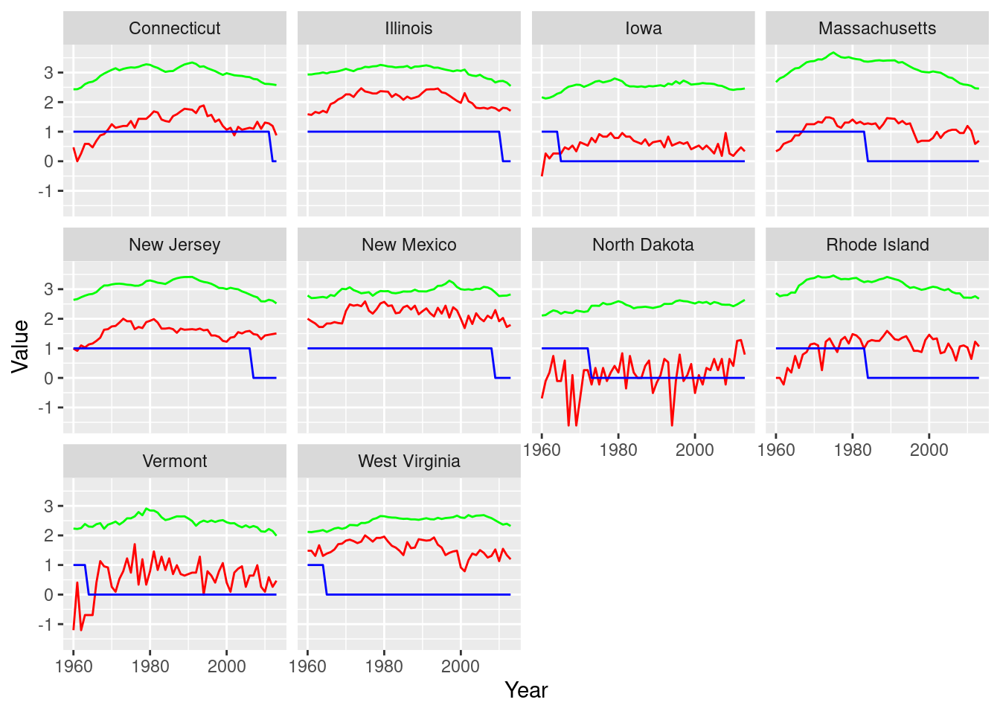

Chapter 18 Problem Sets
Problem 18.1 Crime and punishment
The data in linearRegression_crimePunishment.csv contains the murder rate per capita and the rate of automobile crimes per 100,000 individuals (both on the log scale) in the 10 US states that have changed their legislation on capital punishment since 1960 (in all cases the states abolished capital punishment). We also include a dummy variable (law) that is 1 if the state allows capital punishment in that year, and 0 otherwise.
Problem 18.1.1
Graph the data and comment on any trends.
The data is shown in Figure 1. There seems to be some association between the murder rate and auto crimes. In all cases it is difficult to visually discern an impact of the change in legislation.
Problem 18.1.2
A simple model for murder rates is of the form:
\[ murder_{i , t} \sim N ( α + β penalty_{i , t} + γ car_{i , t} , σ ) , \]
where we assume that the effect of having the death penalty is given by \(β\), which is assumed to be the same across all states. We include \(car_{i , t}\) , a measure of crimes on automobiles, as an independent variable to proxy for the contemporaneous underlying level of crime. Estimate this model and hence determine whether the death penalty acts as a deterrent to murder.
This model can be estimated using the following Stan code:
data {
int N;
real murder[N];
real car[N];
int<lower=0, upper=1> law[N];
int state[N];
}
parameters {
real alpha;
real beta;
real gamma;
real<lower=0> sigma;
}
model {
for(i in 1:N) {
murder[i] ~ normal(alpha + beta * law[i] + gamma * car[i], sigma);
}
alpha ~ normal(0, 1);
beta ~ normal(0, 1);
gamma ~ normal(0, 1);
sigma ~ normal(0, 1);
}
generated quantities{
real logLikelihood[N];
for(i in 1:N)
logLikelihood[i] = normal_lpdf(murder[i] | alpha + beta * law[i] +
gamma * car[i], sigma);
}which when we run we obtain the following results,
| term | mean | se_mean | sd | 2.5% | 25% | 50% | 75% | 97.5% | n_eff | Rhat |
|---|---|---|---|---|---|---|---|---|---|---|
| alpha | −1.47 | 0.01 | 0.22 | −1.89 | −1.62 | −1.48 | −1.32 | −1.04 | 501.04 | 1.01 |
| beta | 0.24 | 0.00 | 0.06 | 0.12 | 0.20 | 0.24 | 0.28 | 0.35 | 878.75 | 1.00 |
| gamma | 0.45 | 0.00 | 0.04 | 0.37 | 0.42 | 0.45 | 0.48 | 0.53 | 508.81 | 1.01 |
Where we see that we estimate that the imposition of the death penalty on average raises the murder rate by on average 24%!
Problem 18.1.3
An alternative model allows there to be state-level effects:
\[ murder_{i , t} \sim N ( α_i + β_i penalty_{i , t} + γ_i car_{i , t} , σ_i ) , \] where we assume that \(α_i \sim \mathcal{N} (\bar{α} , σ_α )\), \(β_i \sim \mathcal{N} ( β , σ_β )\) and \(γ_i \sim \mathcal{N}( γ , σ_γ )\) (we assume fully heterogeneous estimates for \(σ\)). Estimate the above model and compare the results with the homogeneous coefficients model.
This model can be estimated using the following code,
data {
int N;
int K;
real murder[N];
real car[N];
int<lower=0, upper=1> law[N];
int state[N];
}
parameters {
real alpha[K];
real beta[K];
real gamma[K];
real<lower=0> sigma[K];
real alpha_top;
real<lower=0> alpha_sigma;
real beta_top;
real<lower=0> beta_sigma;
real gamma_top;
real<lower=0> gamma_sigma;
}
model {
for(i in 1:N) {
murder[i] ~ normal(
alpha[state[i]] +
beta[state[i]] * law[i] +
gamma[state[i]] * car[i],
sigma[state[i]]
);
}
alpha ~ normal(alpha_top, alpha_sigma);
beta ~ normal(beta_top, beta_sigma);
gamma ~ normal(gamma_top, gamma_sigma);
alpha_top ~ normal(0, 1);
beta_top ~ normal(0, 1);
gamma_top ~ normal(0, 1);
alpha_sigma ~ normal(0, 1);
beta_sigma ~ normal(0, 1);
gamma_sigma ~ normal(0, 1);
sigma ~ normal(0, 1);
}
generated quantities {
real alpha_average;
real beta_average;
real gamma_average;
real logLikelihood[N];
alpha_average = normal_rng(alpha_top, alpha_sigma);
beta_average = normal_rng(beta_top, beta_sigma);
gamma_average = normal_rng(gamma_top, gamma_sigma);
for(i in 1:N)
logLikelihood[i] = normal_lpdf(murder[i] | alpha[state[i]] + beta[state[i]] * law[i] +
gamma[state[i]] * car[i], sigma[state[i]]);
}which when we run we obtain the following results,
| term | mean | se_mean | sd | 2.5% | 25% | 50% | 75% | 97.5% | n_eff | Rhat |
|---|---|---|---|---|---|---|---|---|---|---|
| alpha_average | −1.29 | 0.02 | 1.03 | −3.32 | −1.92 | −1.35 | −0.68 | 0.89 | 3,462.63 | 1.00 |
| beta_average | −0.26 | 0.01 | 0.35 | −0.95 | −0.46 | −0.26 | −0.06 | 0.48 | 3,869.12 | 1.00 |
| gamma_average | 0.48 | 0.00 | 0.18 | 0.09 | 0.38 | 0.48 | 0.57 | 0.84 | 3,831.91 | 1.00 |
with a mean effect size of a 26% reduction in murder rates although with a much wider range of effects.
Problem extra. (Not in main text but wanted to include)
Another model allows there to be time trends in the data,
\[ murder_{i , t} \sim N ( α_i + \delta_it + β_i penalty_{i , t} + γ_i car_{i , t} , σ_i ) , \] where \(δ_i ∼ \mathcal{N} (\bar{δ}, σ_δ)\). Again estimate this model and compare the effect size of the death penalty across the three models.
data {
int N;
int K;
real murder[N];
real car[N];
int<lower=0, upper=1> law[N];
int state[N];
int year[N];
}
parameters {
real alpha[K];
real beta[K];
real gamma[K];
real delta[K];
real<lower=0> sigma[K];
real alpha_top;
real<lower=0> alpha_sigma;
real beta_top;
real<lower=0> beta_sigma;
real gamma_top;
real<lower=0> gamma_sigma;
real delta_top;
real<lower=0> delta_sigma;
}
model {
for(i in 1:N) {
murder[i] ~ normal(
alpha[state[i]] +
beta[state[i]] * law[i] +
gamma[state[i]] * car[i] +
delta[state[i]] * year[i],
sigma[state[i]]
);
}
alpha ~ normal(alpha_top, alpha_sigma);
beta ~ normal(beta_top, beta_sigma);
gamma ~ normal(gamma_top, gamma_sigma);
delta ~ normal(delta_top, delta_sigma);
alpha_top ~ normal(0, 1);
beta_top ~ normal(0, 1);
gamma_top ~ normal(0, 1);
delta_top ~ normal(0, 1);
alpha_sigma ~ normal(0, 1);
beta_sigma ~ normal(0, 1);
gamma_sigma ~ normal(0, 1);
delta_sigma ~ normal(0, 1);
sigma ~ normal(0, 1);
}
generated quantities {
real alpha_average;
real beta_average;
real gamma_average;
real delta_average;
real logLikelihood[N];
alpha_average = normal_rng(alpha_top, alpha_sigma);
beta_average = normal_rng(beta_top, beta_sigma);
gamma_average = normal_rng(gamma_top, gamma_sigma);
delta_average = normal_rng(delta_top, delta_sigma);
for(i in 1:N)
logLikelihood[i] = normal_lpdf(murder[i] | alpha[state[i]] + beta[state[i]] * law[i] +
gamma[state[i]] * car[i] + delta[state[i]] * year[i], sigma[state[i]]);
}This model is only a slight modification of the above one and yields an estimated effect of,
| term | mean | se_mean | sd | 2.5% | 25% | 50% | 75% | 97.5% | n_eff | Rhat |
|---|---|---|---|---|---|---|---|---|---|---|
| alpha_average | −1.45 | 0.24 | 1.47 | −4.28 | −2.40 | −1.45 | −0.55 | 1.48 | 36.40 | 1.08 |
| beta_average | −0.27 | 0.01 | 0.36 | −0.98 | −0.46 | −0.26 | −0.07 | 0.45 | 2,509.53 | 1.00 |
| gamma_average | 0.47 | 0.00 | 0.21 | 0.03 | 0.36 | 0.48 | 0.59 | 0.91 | 1,865.06 | 1.00 |
| delta_average | 0.00 | 0.00 | 0.00 | 0.00 | 0.00 | 0.00 | 0.00 | 0.00 | 31.09 | 1.11 |
Problem 18.1.4
Compare the predictive fit of the models using the estimated leave-one-out cross-validation from the loo package. Which of the three models do you prefer? Hence conclude whether the death penalty acts as a deterrent to murder.
This can be done by recording the log likelihood of each data point in the generated quantities block.
If we do this for all three models we obtain an estimated expected log (pointwise) likelihood from each using the loo function,
- Homogeneous: -512.7
- State-level, no time trend: -59.7
- State-level, with time trend: -57.9
Which when using the “compare” function we see that the best-fitting model is the State-level models with a time trend. In this model the estimated effect of the death penalty is to decrease the murder rate by 18% on average, with a 50% credible interval of 4% ≤ effect ≤ 32%. So even though on average we see that there is quite a strong effect of the law, we are quite uncertain as to its size in a given state.
Problem 18.1.5
Critically evaluate the best-performing model and hence any conclusions that can be drawn from this analysis.
A criticism is that we have failed to include other omitted factors that may affect the murder rate but are also correlated with the abolishment of the death penalty. It is quite possible that contained within \(α_i\) there are factors that may affect both the murder rate and be correlated with the redaction of the law. A potential improvement would be to use first-differences regression (or fixed effects),
\[ \Delta murder_{i , t} \sim \mathcal{N} (\delta_i\Delta t + β_i \Delta penalty_{i , t} + γ_i \Delta car_{i , t} , σ_i ) , \]
where \(∆\) signifies the first difference of the variable. At least in the above model we have removed any individual (time-invariant) heterogeneity from affecting our estimates of the deterrent size. In fact, if we do estimate a model similar to the one above we do not see such any significant impact of the legislation (results not shown).
An alternative approach would be to include other factors in the model that explain \(α_i\).